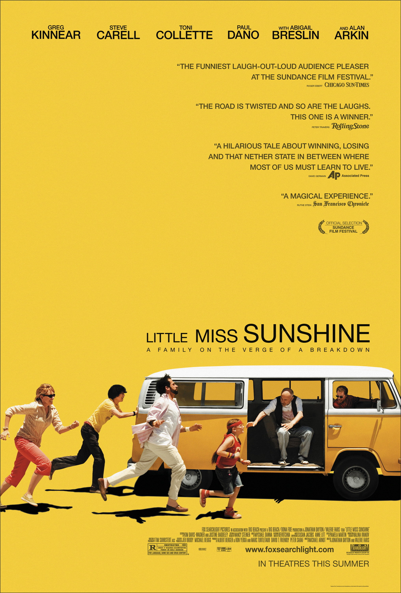

| There Will Be Blood |  |
| Little Miss Sunshine |  |
| 12 Years A Slave |  |
| Love & Mercy |
Awards and Nominations for Paul Dano
-
Academy of Science Fiction, Fantasy & Horror Films, USA
- 2022 Nominee Saturn Award
- Best Supporting Actor
- The Batman
-
Boston Society of Film Critics Awards
- 2015 Winner BSFC Award
- Best Actor
- Love & Mercy
- Tied with Leonardo DiCaprio for The Revenant (2015).
-
BAFTA Awards
- 2008 Nominee BAFTA Film Award
- Best Supporting Actor
- There Will Be Blood
-
Critics Choice Awards
- 2023 Nominee Critics Choice Award
- Best Supporting Actor
- The Fabelmans
- 2019 Nominee Critics Choice Award
- Best Actor in a Movie Made for Television or Limited Series
- Escape at Dannemora
- 2016 Nominee Critics Choice Award
- Best Supporting Actor
- Love & Mercy
- 2007 Winner Critics Choice Award
- Best Young Actor
- Little Miss Sunshine
Minor Awards and nominations of Paul Dano
Cannes Film Festival
- 2018 Nominee Golden Camera
Dallas-Fort Worth Film Critics Association Awards
- 2022 Nominee DFWFCA Award
- Best Supporting Actor
- The Fabelmans
- 3rd Place
- 2015 Winner DFWFCA Award
- Best Supporting Actor
- Love & Mercy
Deauville Film Festival
- 2012 Winner New Hollywood Award

Paul Dano Trivia
- Daniel Day-Lewis was so impressed by his work in the film, The Ballad of Jack and Rose (2005), that he suggested him to Paul Thomas Anderson for the role of "Paul Sunday" in the film, There Will Be Blood (2007).
- As of 2023, has appeared in 4 films that were nominated for the Best Picture Oscar: Little Miss Sunshine (2006), There Will Be Blood (2007), 12 Years a Slave (2013), and The Fabelmans (2022). 12 Years a Slave (2013) won in the category.
- In a long-term relationship with Zoe Kazan since 2007. They had a daughter together. They co-starred in Ruby Sparks (2012), which she wrote, and also co-wrote the screenplay for Wildlife (2018), which he directed.
- Has a daughter, Alma Bay Dano (b. at the end of August 2018), with Zoe Kazan.
- Packed on 20 lbs of muscle to play real-life convicted murderer and escapee David Sweat in the TV series Escape at Dannemora (2018).
- Lead guitar and vocals in the band Mook, based out of Wilton, Connecticut.
- Paul's paternal grandparents, John Dano and Anna Herzo, were both from Rusyn/Carpathian families that immigrated to Scranton, Pennsylvania. Paul's mother is of Slovenian/Bohemian Czech descent on one side and Swedish descent on the other.
- Matt Reeves wrote his part of The Riddler in The Batman (2022) with him in mind.
- Was ranked #5 on Entertainment Weekly's '30 Under 30' the actors list. (2008).
- Daughter Alma was born to Dano and his longtime partner Zoe Kazan in August 2018.
- Made his Broadway debut at the age of 12 in Inherit The Wind opposite George C. Scott and Charles Durning.